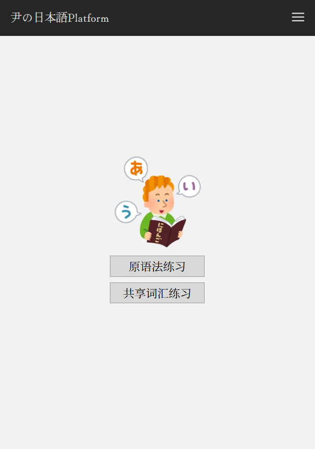
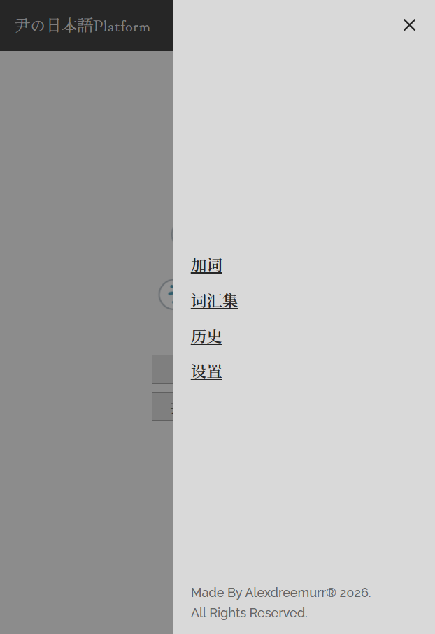
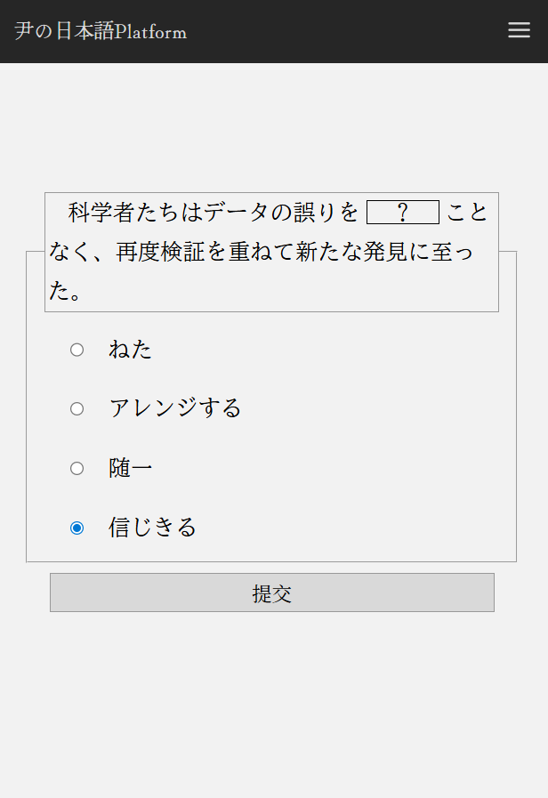
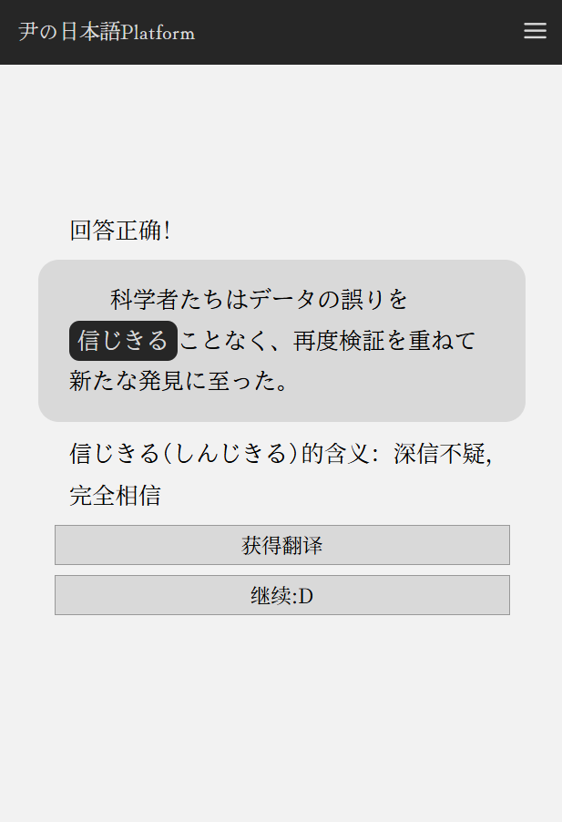
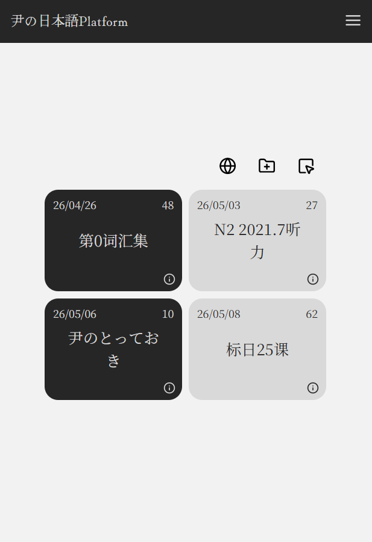
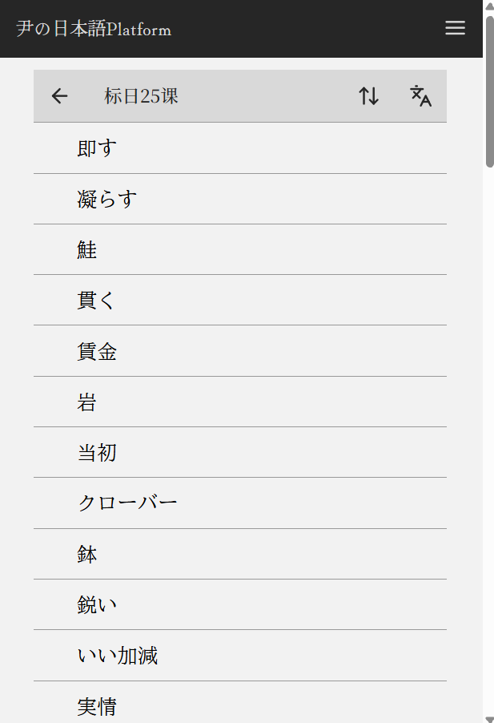
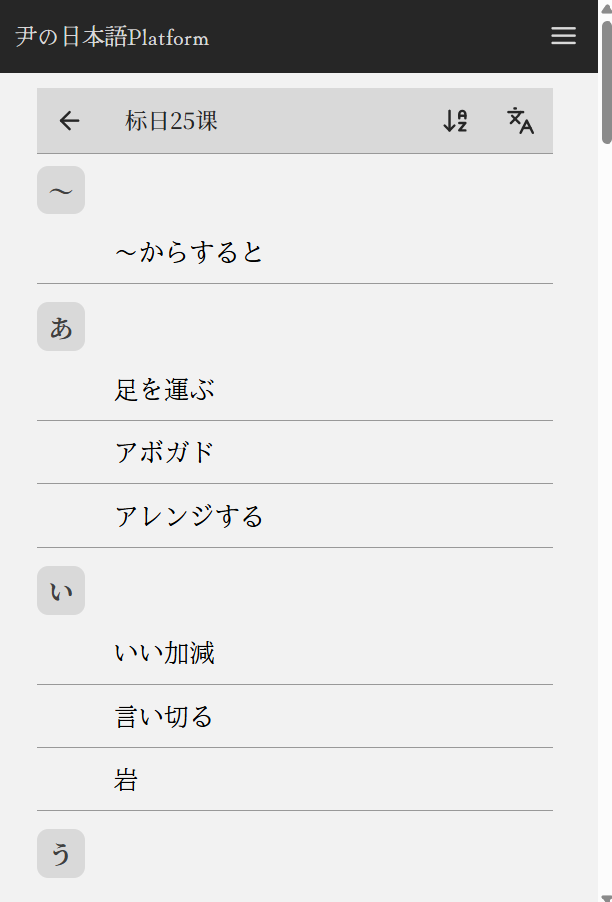
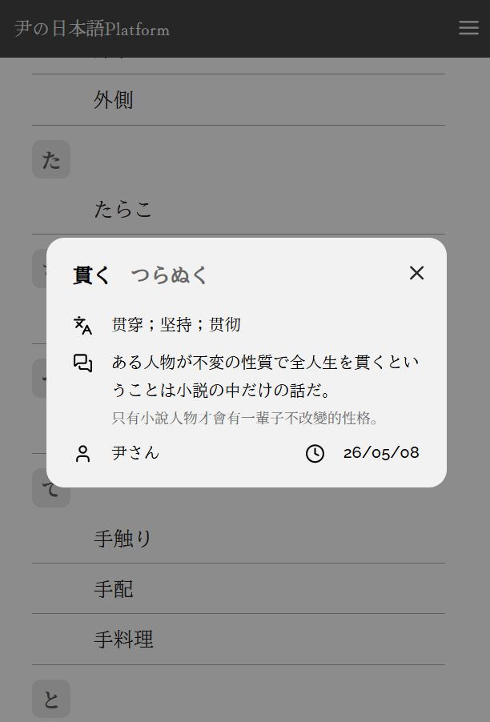
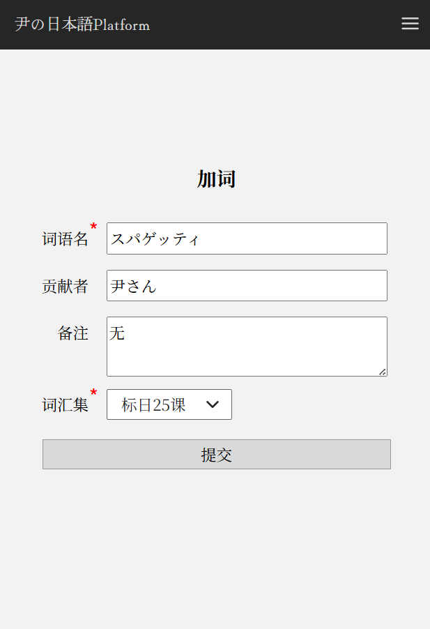
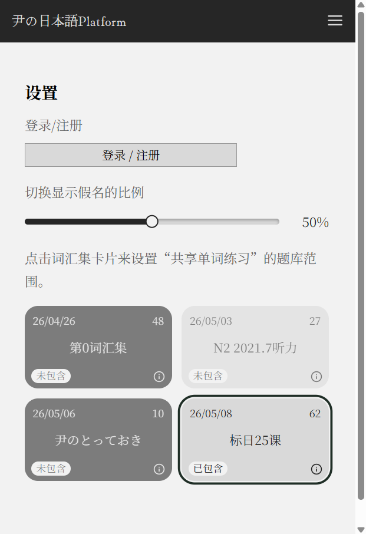

这份手册面向第一次使用平台的用户，介绍入口、练习流程、词汇集、加词、历史记录和设置功能。 平台网址： https://alexdreemurr.github.io/HappyJPGrammar/
打开平台后，首页会展示应用标识和两个主要练习入口：语法练习与共享词汇练习。顶部导航提供常用功能，包括加词、词汇集、历史和设置；在较窄的屏幕上，这些入口会收纳到菜单中。

图 1：首页与主要入口

练习页面采用单选题形式。题目会展示一段日语句子，目标位置以空缺或强调形式呈现；下方列出若干备选答案。选择答案后，点击提交即可查看结果。

阅读日语句子，查看空缺前后的语境，并在下方选项中选择答案。
点击一个单选项。未选择答案时，提交按钮不可用，避免误提交。
提交后，系统会提示“回答正确！”或“好像有点不太对...”，并展示正确答案的含义。
点击继续:D，系统会加载下一道题。
答案页会再次显示原句、目标语法或词汇形式、中文含义，并提供获得翻译按钮。点击后，平台会请求翻译服务，把日文例句翻译成中文。

| 页面元素 | 用途 |
|---|---|
| 答题反馈 | 告诉你本题是否答对。 |
| 原句 | 显示本题使用的完整句子，便于查看正确答案所在的位置。 |
| 获得翻译 | 请求中文翻译。网络或服务异常时，页面会提示翻译失败。 |
| 继续:D | 结束当前题目，加载下一题。 |
词汇集用于组织共享词汇练习的题库。你可以把它理解成一个个“单词文件夹”：每个词汇集里放着一组单词、读音、含义和例句。进入词汇集页面后，你可以查看自己可访问的词汇集卡片；点击某张卡片即可进入详情页，浏览其中的词条。

每张卡片中间显示词汇集名称，卡片上方通常会显示创建时间和词条数量。如果左下角出现锁形标记，说明这是私有词汇集，通常需要通过 ID 和密码加入。
在电脑端，把鼠标悬停到卡片右下角的 info 图标上，就可以查看词汇集介绍和 ID。ID 常用于加入私有词汇集，或者把某个词汇集分享给别人。
手机和平板没有“鼠标悬停”，所以需要点击卡片右下角的 info 按钮。卡片会切换成介绍内容；想回到词汇集名称时，再点一次右下角的返回图标即可。
详情页会列出词汇集中的单词。顶部按钮可返回列表、切换排序方式、切换单词显示为原词或假名。排序按钮会在默认顺序、あ→ん、ん→あ之间循环。
点击词条会打开详情弹窗。弹窗里会显示单词原形、读音、中文含义、例句、贡献者和添加时间。例句加载需要一点时间，如果暂时显示为 ---，可以稍等或重新打开。
点击语言图标后，词条列表会在“原词显示”和“假名显示”之间切换。再次点击同一个图标，可以切回原来的显示方式。



词汇集列表右上方提供若干操作图标。普通用户可以加入私有词汇集；有权限的用户可以创建、编辑或删除词汇集。部分操作需要输入词汇集密码。
如果你只是想浏览词汇，直接点击卡片即可。如果你要修改或删除词汇集，需要先点击选择模式按钮进入选择模式，再选中目标词汇集。进入选择模式后，卡片会变成“可选择”的状态，勾选框或选中高亮会帮助你确认当前选中了哪一个。
| 功能 | 使用场景 | 需要填写的信息 |
|---|---|---|
| 添加词汇集 | 创建一个新的公共或私有词汇集。可用于某本教材、某个课程或某次考试的单词整理。 | 名称、描述、权限、状态、密码、创建者。密码用于后续编辑、删除或加入。 |
| 加入词汇集 | 通过 ID 和密码加入私有词汇集。别人分享私有词汇集给你时，通常会同时给你这两项信息。 | 词汇集 ID、密码。ID 可以在词汇集卡片的介绍信息里看到。 |
| 编辑词汇集 | 修改已选词汇集的信息或密码。比如改名、补充描述、改成私有，或关闭继续添加。 | 名称、描述、作者、权限、状态、新密码。只填写需要改变的内容即可。 |
| 删除词汇集 | 删除已选词汇集。这个操作会影响词汇集本身，请确认选中对象无误后再提交。 | 词汇集密码。密码不正确时不会删除。 |
通过加词页面，你可以向指定词汇集提交新的日语单词。系统会先检查同一词汇集中是否已经存在该词，再自动生成词条信息和例句。

输入真实存在的日语单词，例如“改める”。这是必填项。一般填写单词原形即可。
贡献者和备注为可选项。备注可说明希望生成的用法、语境或侧重点，例如“请重点生成商务场景”“区分自动词用法”“想练习 N2 难度例句”等。
选择这个单词要加入的词汇集。不同词汇集可以包含同名词。
提交期间页面会显示“提交中”。成功后会提示“提交成功！”。
在设置页面可以登录或注册账号。注册成功后请留意确认邮件；登录后，设置页会显示当前账号邮箱，并提供退出登录按钮。

设置页会展示可用词汇集卡片。点击卡片即可决定该词汇集是否参与共享词汇练习。至少需要保留一个词汇集，避免练习范围为空。
被选中的词汇集会用更明显的边框标出来；未选中的词汇集会变淡。共享词汇练习只会从已选词汇集中抽取题目。
滑动比例条可以调整共享词汇练习中显示假名提示的概率。比例越高，题目中出现假名读法的概率越高；比例越低，题目中出现假名读法的概率越低。
每次提交题目后，平台会把该题保存到浏览器本地历史记录中。进入历史页面可以查看已经提交过的句子。
平台在部分功能中会调用外部或后端接口。普通使用时不需要手动配置这些接口；了解它们的作用，有助于判断某些加载或报错来自哪里。
| 接口/服务 | 使用位置 | 作用 |
|---|---|---|
| Supabase | 账号、词汇集、词条、练习记录 | 平台的数据服务。用于登录注册、读取词汇集、保存新增词条，以及记录共享词汇练习的作答情况。 |
| deepseek-chat | 答案页翻译、加词生成 | 平台通过 Supabase Edge Function 调用的 AI 接口。答案页点击“获得翻译”时，它会返回中文翻译；加词时，它会根据输入的单词、贡献者、备注和词汇集生成词条信息与例句。 |
| Tatoeba | 词条详情弹窗 | Tatoeba 是一个多语言例句数据库。平台在查看词条详情时，会通过 tatoeba-proxy 查询包含该单词的日语例句，并优先显示中文翻译，其次显示英文翻译。 |
| tatoeba-proxy | 查找 Tatoeba 例句 | 平台自己的 Supabase Edge Function 代理接口。前端不会直接把请求散落到页面里，而是通过这个代理接口向 Tatoeba 查询例句，便于统一处理跨域、参数和返回数据。 |
可能是网络连接、题库服务或数据库响应较慢。请稍等片刻，或刷新页面后重试。
翻译功能依赖外部接口。若接口暂时不可用，页面会提示失败；可以稍后再次点击获得翻译。
请检查是否已登录、词汇集 ID 是否正确、密码是否匹配，以及该词汇集是否允许加入。
同一词汇集中不能重复添加同一个单词。你可以选择其他词汇集，或修改备注后联系管理员更新已有词条。